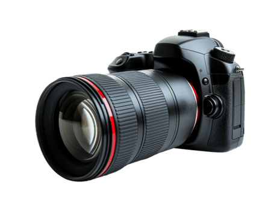
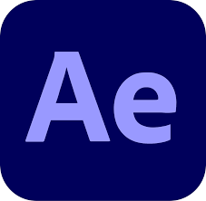
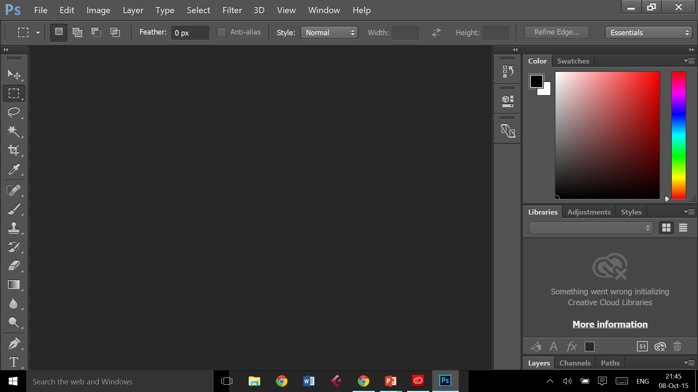
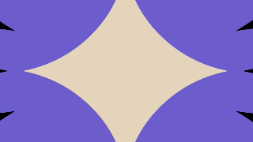
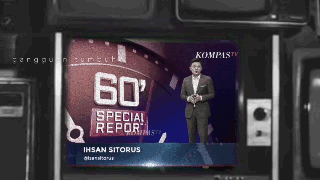

WELCOME
Our Portofolio of Creative Photography & Video Editing Team


Our Portofolio of Creative Photography & Video Editing Team
Duallens adalah tim fotografi dan penyuntingan video kreatif yang berfokus pada penyampaian cerita visual berkualitas tinggi. Tujuan kami adalah untuk menangkap, mengolah, dan menyunting momen-momen yang menceritakan kisah bermakna dan menciptakan kenangan abadi melalui visual yang kuat dan penyuntingan yang cermat. Dengan tim yang terdiri dari dua orang kreatif, kami berkolaborasi erat di setiap tahap proses—mulai dari perencanaan dan pengambilan gambar hingga pasca-produksi dan pengiriman akhir. Kerja sama tim ini memungkinkan kami untuk mempertahankan gaya visual yang konsisten, memperhatikan detail, dan memastikan setiap proyek mencerminkan visi klien. Melalui portofolio kami, kami menampilkan pendekatan kami terhadap penceritaan, keahlian teknis kami, dan komitmen kami untuk menghasilkan visual yang tidak hanya estetis tetapi juga berdampak dan autentik.
"Capturing Moments, Crafting Stories"
Satu
berburu momen.
Satu menghidupkan
suasana.

Komang Dhio Rimben Januartha
Fotografer berspesialisasi dalam menangkap momen menakjubkan yang penuh makna. Berbekal ketelitian pada detail dan hasrat seni, mereka menghidupkan visi Anda lewat bidikan lensa.

Canon EOS 700d
I Kadek Edy Windu Saputra
Editor video terampil dalam mengubah footag mentah menjadi video yang menarik. Dengan keahlian dalam berbagai teknik editing dan perangkat lunak, ia memastikan setiap proyek menjadi halus dan menarik.

After Effect
PHOTOGRAPHY
Photography adalah seni dan ilmu dalam mengambil gambar menggunakan kamera. Dalam konteks ini, fotografi digunakan untuk merekam momen-momen penting dalam proses produksi video, seperti pengambilan footag mentah yang akan diubah menjadi video yang menarik.

EDITING PHOTO
Editing photo adalah proses memperbaiki atau memodifikasi gambar digital menggunakan perangkat lunak editing foto. Dalam konteks ini, editing foto digunakan untuk memperbaiki kualitas gambar yang diambil selama proses produksi video, sehingga hasil akhir terlihat lebih profesional dan menarik.

MOTION GRAPHICS
Motion graphics adalah cabang dari desain grafis yang memadukan elemen visual (teks, ikon, ilustrasi, bentuk, warna) dengan gerakan (animasi) dan sering disertai audio, untuk menyampaikan informasi atau pesan secara lebih dinamis dan komunikatif.

TYPOGRAPHY CINEMATIC
Typography Cinematic adalah gaya motion typography yang menampilkan teks dengan nuansa sinematik seperti film, baik dari sisi gerak, komposisi, tempo, warna, maupun audio. Fokus utamanya adalah membuat teks terasa dramatis, emosional, dan berimpact tinggi, bukan sekadar terbaca.